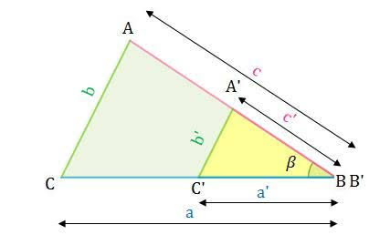

En las clases de mate hemos estado viendo cómo comparar triángulos Básicamente hay dos conceptos que a veces se confunden pero que son fáciles de entender: la congruencia y la semejanza
Decimos que dos triángulos son congruentes cuando son como gemelos idénticos Tienen la misma forma y el mismito tamaño Si los dibujas en un papel, los recortas y pones uno encima del otro, encajan a la perfección sin que sobre o falte nada
Todos sus lados miden exactamente lo mismo
Todos sus ángulos por dentro también miden lo mismo
Dos triángulos son semejantes cuando tienen la misma forma, pero diferente tamaño Imagina que tomas un dibujo de un triángulo y le haces zoom en el celular para hacerlo más grande o más chico, pero sin que se deforme Eso es la semejanza
Sus ángulos por dentro siguen midiendo lo mismo (por eso no pierden su forma)
Sus lados son proporcionales O sea, si un triángulo es el doble de grande que el otro, todos sus lados van a medir el doble, no nada más uno

← Volver a la página principal (≧∀≦)